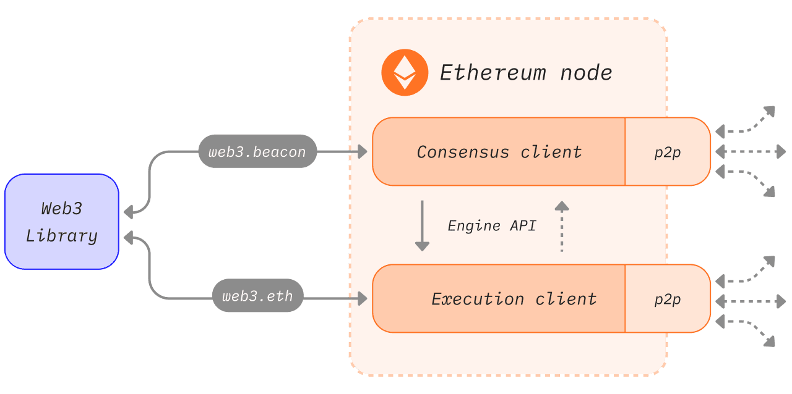

POS#
https://ethereum.org/en/developers/docs/consensus-mechanisms/pos/
Execution client#

执行客户端感觉就是之前的 eth 客户端，有 mempool ，打包之类的东西，也有 p2p 网络做数据的交换。
按照 https://ethereum.org/en/developers/docs/consensus-mechanisms/pos/ 上面的说法，执行客户端负责：
收到tx之后，验证tx的正确性，比如签名是否ok，以及余额是否足够；
验证tx之后，把tx放在mempool中，并通过自己的 p2p 网络广播出去；
在共识客户端的引导下，执行打包和计算state 改变等任务。
Engine API#
执行客户端和共识客户端之间的API就是这个所谓的 Engine API，其细节都在
但是，这个文档并不直观，一个直观的介绍在
https://hackmd.io/@danielrachi/engine_api
这个介绍是可以做一些实验的。
1. beacon node startup#
import requests, jwt, time
import json
jwt_secret_fn = '/etc/sg-a-jwt.hex'
with open(jwt_secret_fn, 'r') as f:
jwt_secret = f.read().strip()
assert len(jwt_secret) == 64
jwt_secret_bytes = bytes.fromhex(jwt_secret)
assert len(jwt_secret_bytes) == 32
def print_obj(obj):
print(json.dumps(obj, indent=2))
def call_engine_api(payload):
global jwt_secret_bytes
jwt_payload = {
"iat": int(time.time()),
}
jwt_token = jwt.encode(jwt_payload, jwt_secret_bytes, algorithm='HS256')
engine_api_endpoint = 'http://localhost:8551'
x = requests.request('POST', engine_api_endpoint, json=payload, headers={
'Authorization': 'Bearer ' + jwt_token,
'Content-Type': 'application/json',
})
obj = json.loads(x.text)
#print_obj(obj)
assert obj["jsonrpc"] == "2.0"
return obj
# test call
ret = call_engine_api({
"jsonrpc": "2.0",
"method": "eth_blockNumber",
"params": [],
"id": 1,
})
blocknumber = int(ret["result"], 0)
assert blocknumber > 0
print(f"bloknumber is {blocknumber}")
---------------------------------------------------------------------------
ConnectionRefusedError Traceback (most recent call last)
File ~/anaconda3/lib/python3.11/site-packages/urllib3/connection.py:174, in HTTPConnection._new_conn(self)
173 try:
--> 174 conn = connection.create_connection(
175 (self._dns_host, self.port), self.timeout, **extra_kw
176 )
178 except SocketTimeout:
File ~/anaconda3/lib/python3.11/site-packages/urllib3/util/connection.py:95, in create_connection(address, timeout, source_address, socket_options)
94 if err is not None:
---> 95 raise err
97 raise socket.error("getaddrinfo returns an empty list")
File ~/anaconda3/lib/python3.11/site-packages/urllib3/util/connection.py:85, in create_connection(address, timeout, source_address, socket_options)
84 sock.bind(source_address)
---> 85 sock.connect(sa)
86 return sock
ConnectionRefusedError: [Errno 61] Connection refused
During handling of the above exception, another exception occurred:
NewConnectionError Traceback (most recent call last)
File ~/anaconda3/lib/python3.11/site-packages/urllib3/connectionpool.py:714, in HTTPConnectionPool.urlopen(self, method, url, body, headers, retries, redirect, assert_same_host, timeout, pool_timeout, release_conn, chunked, body_pos, **response_kw)
713 # Make the request on the httplib connection object.
--> 714 httplib_response = self._make_request(
715 conn,
716 method,
717 url,
718 timeout=timeout_obj,
719 body=body,
720 headers=headers,
721 chunked=chunked,
722 )
724 # If we're going to release the connection in ``finally:``, then
725 # the response doesn't need to know about the connection. Otherwise
726 # it will also try to release it and we'll have a double-release
727 # mess.
File ~/anaconda3/lib/python3.11/site-packages/urllib3/connectionpool.py:415, in HTTPConnectionPool._make_request(self, conn, method, url, timeout, chunked, **httplib_request_kw)
414 else:
--> 415 conn.request(method, url, **httplib_request_kw)
417 # We are swallowing BrokenPipeError (errno.EPIPE) since the server is
418 # legitimately able to close the connection after sending a valid response.
419 # With this behaviour, the received response is still readable.
File ~/anaconda3/lib/python3.11/site-packages/urllib3/connection.py:244, in HTTPConnection.request(self, method, url, body, headers)
243 headers["User-Agent"] = _get_default_user_agent()
--> 244 super(HTTPConnection, self).request(method, url, body=body, headers=headers)
File ~/anaconda3/lib/python3.11/http/client.py:1286, in HTTPConnection.request(self, method, url, body, headers, encode_chunked)
1285 """Send a complete request to the server."""
-> 1286 self._send_request(method, url, body, headers, encode_chunked)
File ~/anaconda3/lib/python3.11/http/client.py:1332, in HTTPConnection._send_request(self, method, url, body, headers, encode_chunked)
1331 body = _encode(body, 'body')
-> 1332 self.endheaders(body, encode_chunked=encode_chunked)
File ~/anaconda3/lib/python3.11/http/client.py:1281, in HTTPConnection.endheaders(self, message_body, encode_chunked)
1280 raise CannotSendHeader()
-> 1281 self._send_output(message_body, encode_chunked=encode_chunked)
File ~/anaconda3/lib/python3.11/http/client.py:1041, in HTTPConnection._send_output(self, message_body, encode_chunked)
1040 del self._buffer[:]
-> 1041 self.send(msg)
1043 if message_body is not None:
1044
1045 # create a consistent interface to message_body
File ~/anaconda3/lib/python3.11/http/client.py:979, in HTTPConnection.send(self, data)
978 if self.auto_open:
--> 979 self.connect()
980 else:
File ~/anaconda3/lib/python3.11/site-packages/urllib3/connection.py:205, in HTTPConnection.connect(self)
204 def connect(self):
--> 205 conn = self._new_conn()
206 self._prepare_conn(conn)
File ~/anaconda3/lib/python3.11/site-packages/urllib3/connection.py:186, in HTTPConnection._new_conn(self)
185 except SocketError as e:
--> 186 raise NewConnectionError(
187 self, "Failed to establish a new connection: %s" % e
188 )
190 return conn
NewConnectionError: <urllib3.connection.HTTPConnection object at 0x117afe710>: Failed to establish a new connection: [Errno 61] Connection refused
During handling of the above exception, another exception occurred:
MaxRetryError Traceback (most recent call last)
File ~/anaconda3/lib/python3.11/site-packages/requests/adapters.py:486, in HTTPAdapter.send(self, request, stream, timeout, verify, cert, proxies)
485 try:
--> 486 resp = conn.urlopen(
487 method=request.method,
488 url=url,
489 body=request.body,
490 headers=request.headers,
491 redirect=False,
492 assert_same_host=False,
493 preload_content=False,
494 decode_content=False,
495 retries=self.max_retries,
496 timeout=timeout,
497 chunked=chunked,
498 )
500 except (ProtocolError, OSError) as err:
File ~/anaconda3/lib/python3.11/site-packages/urllib3/connectionpool.py:798, in HTTPConnectionPool.urlopen(self, method, url, body, headers, retries, redirect, assert_same_host, timeout, pool_timeout, release_conn, chunked, body_pos, **response_kw)
796 e = ProtocolError("Connection aborted.", e)
--> 798 retries = retries.increment(
799 method, url, error=e, _pool=self, _stacktrace=sys.exc_info()[2]
800 )
801 retries.sleep()
File ~/anaconda3/lib/python3.11/site-packages/urllib3/util/retry.py:592, in Retry.increment(self, method, url, response, error, _pool, _stacktrace)
591 if new_retry.is_exhausted():
--> 592 raise MaxRetryError(_pool, url, error or ResponseError(cause))
594 log.debug("Incremented Retry for (url='%s'): %r", url, new_retry)
MaxRetryError: HTTPConnectionPool(host='localhost', port=8551): Max retries exceeded with url: / (Caused by NewConnectionError('<urllib3.connection.HTTPConnection object at 0x117afe710>: Failed to establish a new connection: [Errno 61] Connection refused'))
During handling of the above exception, another exception occurred:
ConnectionError Traceback (most recent call last)
Cell In[1], line 36
33 return obj
35 # test call
---> 36 ret = call_engine_api({
37 "jsonrpc": "2.0",
38 "method": "eth_blockNumber",
39 "params": [],
40 "id": 1,
41 })
42 blocknumber = int(ret["result"], 0)
43 assert blocknumber > 0
Cell In[1], line 24, in call_engine_api(payload)
20 jwt_token = jwt.encode(jwt_payload, jwt_secret_bytes, algorithm='HS256')
22 engine_api_endpoint = 'http://localhost:8551'
---> 24 x = requests.request('POST', engine_api_endpoint, json=payload, headers={
25 'Authorization': 'Bearer ' + jwt_token,
26 'Content-Type': 'application/json',
27 })
29 obj = json.loads(x.text)
30 #print_obj(obj)
File ~/anaconda3/lib/python3.11/site-packages/requests/api.py:59, in request(method, url, **kwargs)
55 # By using the 'with' statement we are sure the session is closed, thus we
56 # avoid leaving sockets open which can trigger a ResourceWarning in some
57 # cases, and look like a memory leak in others.
58 with sessions.Session() as session:
---> 59 return session.request(method=method, url=url, **kwargs)
File ~/anaconda3/lib/python3.11/site-packages/requests/sessions.py:589, in Session.request(self, method, url, params, data, headers, cookies, files, auth, timeout, allow_redirects, proxies, hooks, stream, verify, cert, json)
584 send_kwargs = {
585 "timeout": timeout,
586 "allow_redirects": allow_redirects,
587 }
588 send_kwargs.update(settings)
--> 589 resp = self.send(prep, **send_kwargs)
591 return resp
File ~/anaconda3/lib/python3.11/site-packages/requests/sessions.py:703, in Session.send(self, request, **kwargs)
700 start = preferred_clock()
702 # Send the request
--> 703 r = adapter.send(request, **kwargs)
705 # Total elapsed time of the request (approximately)
706 elapsed = preferred_clock() - start
File ~/anaconda3/lib/python3.11/site-packages/requests/adapters.py:519, in HTTPAdapter.send(self, request, stream, timeout, verify, cert, proxies)
515 if isinstance(e.reason, _SSLError):
516 # This branch is for urllib3 v1.22 and later.
517 raise SSLError(e, request=request)
--> 519 raise ConnectionError(e, request=request)
521 except ClosedPoolError as e:
522 raise ConnectionError(e, request=request)
ConnectionError: HTTPConnectionPool(host='localhost', port=8551): Max retries exceeded with url: / (Caused by NewConnectionError('<urllib3.connection.HTTPConnection object at 0x117afe710>: Failed to establish a new connection: [Errno 61] Connection refused'))
## from CL to EL
ret = call_engine_api({
"jsonrpc": "2.0",
"method": "engine_exchangeCapabilities",
"params": [ [] ],
"id": 1,
})
print_obj(ret)
{
"jsonrpc": "2.0",
"id": 1,
"result": [
"engine_forkchoiceUpdatedV1",
"engine_forkchoiceUpdatedV2",
"engine_forkchoiceUpdatedV3",
"engine_newPayloadV1",
"engine_newPayloadV2",
"engine_newPayloadV3",
"engine_getPayloadV1",
"engine_getPayloadV2",
"engine_getPayloadV3",
"engine_exchangeTransitionConfigurationV1",
"engine_getPayloadBodiesByHashV1",
"engine_getPayloadBodiesByRangeV1"
]
}
Validator#
先去ETH deposit contract 上打入 32 个 ETH#
https://etherscan.io/address/0x00000000219ab540356cbb839cbe05303d7705fa
下面是合约内容
%%javascript
// ┏━━━┓━┏┓━┏┓━━┏━━━┓━━┏━━━┓━━━━┏━━━┓━━━━━━━━━━━━━━━━━━━┏┓━━━━━┏━━━┓━━━━━━━━━┏┓━━━━━━━━━━━━━━┏┓━
// ┃┏━━┛┏┛┗┓┃┃━━┃┏━┓┃━━┃┏━┓┃━━━━┗┓┏┓┃━━━━━━━━━━━━━━━━━━┏┛┗┓━━━━┃┏━┓┃━━━━━━━━┏┛┗┓━━━━━━━━━━━━┏┛┗┓
// ┃┗━━┓┗┓┏┛┃┗━┓┗┛┏┛┃━━┃┃━┃┃━━━━━┃┃┃┃┏━━┓┏━━┓┏━━┓┏━━┓┏┓┗┓┏┛━━━━┃┃━┗┛┏━━┓┏━┓━┗┓┏┛┏━┓┏━━┓━┏━━┓┗┓┏┛
// ┃┏━━┛━┃┃━┃┏┓┃┏━┛┏┛━━┃┃━┃┃━━━━━┃┃┃┃┃┏┓┃┃┏┓┃┃┏┓┃┃━━┫┣┫━┃┃━━━━━┃┃━┏┓┃┏┓┃┃┏┓┓━┃┃━┃┏┛┗━┓┃━┃┏━┛━┃┃━
// ┃┗━━┓━┃┗┓┃┃┃┃┃┃┗━┓┏┓┃┗━┛┃━━━━┏┛┗┛┃┃┃━┫┃┗┛┃┃┗┛┃┣━━┃┃┃━┃┗┓━━━━┃┗━┛┃┃┗┛┃┃┃┃┃━┃┗┓┃┃━┃┗┛┗┓┃┗━┓━┃┗┓
// ┗━━━┛━┗━┛┗┛┗┛┗━━━┛┗┛┗━━━┛━━━━┗━━━┛┗━━┛┃┏━┛┗━━┛┗━━┛┗┛━┗━┛━━━━┗━━━┛┗━━┛┗┛┗┛━┗━┛┗┛━┗━━━┛┗━━┛━┗━┛
// ━━━━━━━━━━━━━━━━━━━━━━━━━━━━━━━━━━━━━━┃┃━━━━━━━━━━━━━━━━━━━━━━━━━━━━━━━━━━━━━━━━━━━━━━━━━━━━━
// ━━━━━━━━━━━━━━━━━━━━━━━━━━━━━━━━━━━━━━┗┛━━━━━━━━━━━━━━━━━━━━━━━━━━━━━━━━━━━━━━━━━━━━━━━━━━━━━
// SPDX-License-Identifier: CC0-1.0
pragma solidity 0.6.11;
// This interface is designed to be compatible with the Vyper version.
/// @notice This is the Ethereum 2.0 deposit contract interface.
/// For more information see the Phase 0 specification under https://github.com/ethereum/eth2.0-specs
interface IDepositContract {
/// @notice A processed deposit event.
event DepositEvent(
bytes pubkey,
bytes withdrawal_credentials,
bytes amount,
bytes signature,
bytes index
);
/// @notice Submit a Phase 0 DepositData object.
/// @param pubkey A BLS12-381 public key.
/// @param withdrawal_credentials Commitment to a public key for withdrawals.
/// @param signature A BLS12-381 signature.
/// @param deposit_data_root The SHA-256 hash of the SSZ-encoded DepositData object.
/// Used as a protection against malformed input.
function deposit(
bytes calldata pubkey,
bytes calldata withdrawal_credentials,
bytes calldata signature,
bytes32 deposit_data_root
) external payable;
/// @notice Query the current deposit root hash.
/// @return The deposit root hash.
function get_deposit_root() external view returns (bytes32);
/// @notice Query the current deposit count.
/// @return The deposit count encoded as a little endian 64-bit number.
function get_deposit_count() external view returns (bytes memory);
}
// Based on official specification in https://eips.ethereum.org/EIPS/eip-165
interface ERC165 {
/// @notice Query if a contract implements an interface
/// @param interfaceId The interface identifier, as specified in ERC-165
/// @dev Interface identification is specified in ERC-165. This function
/// uses less than 30,000 gas.
/// @return `true` if the contract implements `interfaceId` and
/// `interfaceId` is not 0xffffffff, `false` otherwise
function supportsInterface(bytes4 interfaceId) external pure returns (bool);
}
// This is a rewrite of the Vyper Eth2.0 deposit contract in Solidity.
// It tries to stay as close as possible to the original source code.
/// @notice This is the Ethereum 2.0 deposit contract interface.
/// For more information see the Phase 0 specification under https://github.com/ethereum/eth2.0-specs
contract DepositContract is IDepositContract, ERC165 {
uint constant DEPOSIT_CONTRACT_TREE_DEPTH = 32;
// NOTE: this also ensures `deposit_count` will fit into 64-bits
// 最大的可DEPOSIT的数量，2^32-1，不是ETH个数，是DEPOSIT的数量，也就是32个ETH只算一次
uint constant MAX_DEPOSIT_COUNT = 2**DEPOSIT_CONTRACT_TREE_DEPTH - 1;
// 感觉是类似于Merkle树的结构?
// hash = sha256(abi.encodePacked(left, right))
// 这个树有个特点，叶子是从左往右fill的
// branch存放的是下一个插入节点的 to root merkle path，但只看left pair，因为right都是0
// 注意其中有些数据并没有意义，有没有意义得由deposit_count来决定
bytes32[DEPOSIT_CONTRACT_TREE_DEPTH] branch;
// DEPOSIT的次数
uint256 deposit_count;
// 如果下面的所有数据都是空的，那么这个树的root是啥
bytes32[DEPOSIT_CONTRACT_TREE_DEPTH] zero_hashes;
constructor() public {
// Compute hashes in empty sparse Merkle tree
// 初始化 zero root hash
// zero_hashes[0] = 0x0 ?
for (uint height = 0; height < DEPOSIT_CONTRACT_TREE_DEPTH - 1; height++)
zero_hashes[height + 1] = sha256(abi.encodePacked(zero_hashes[height], zero_hashes[height]));
}
function get_deposit_root() override external view returns (bytes32) {
bytes32 node;
uint size = deposit_count;
for (uint height = 0; height < DEPOSIT_CONTRACT_TREE_DEPTH; height++) {
// 如果我是right child，那么我的left pair就有数据，branch[height]
if ((size & 1) == 1)
node = sha256(abi.encodePacked(branch[height], node));
// 否则，我有right pair，全是0
else
node = sha256(abi.encodePacked(node, zero_hashes[height]));
// 上移
size /= 2;
}
return sha256(abi.encodePacked(
node,
to_little_endian_64(uint64(deposit_count)),
bytes24(0)
));
}
function get_deposit_count() override external view returns (bytes memory) {
return to_little_endian_64(uint64(deposit_count));
}
function deposit(
bytes calldata pubkey,
bytes calldata withdrawal_credentials,
bytes calldata signature,
bytes32 deposit_data_root
) override external payable {
// Extended ABI length checks since dynamic types are used.
require(pubkey.length == 48, "DepositContract: invalid pubkey length");
require(withdrawal_credentials.length == 32, "DepositContract: invalid withdrawal_credentials length");
require(signature.length == 96, "DepositContract: invalid signature length");
// Check deposit amount
require(msg.value >= 1 ether, "DepositContract: deposit value too low");
require(msg.value % 1 gwei == 0, "DepositContract: deposit value not multiple of gwei");
uint deposit_amount = msg.value / 1 gwei;
require(deposit_amount <= type(uint64).max, "DepositContract: deposit value too high");
// Emit `DepositEvent` log
bytes memory amount = to_little_endian_64(uint64(deposit_amount));
emit DepositEvent(
pubkey,
withdrawal_credentials,
amount,
signature,
to_little_endian_64(uint64(deposit_count))
);
// Compute deposit data root (`DepositData` hash tree root)
bytes32 pubkey_root = sha256(abi.encodePacked(pubkey, bytes16(0)));
bytes32 signature_root = sha256(abi.encodePacked(
sha256(abi.encodePacked(signature[:64])),
sha256(abi.encodePacked(signature[64:], bytes32(0)))
));
bytes32 node = sha256(abi.encodePacked(
sha256(abi.encodePacked(pubkey_root, withdrawal_credentials)),
sha256(abi.encodePacked(amount, bytes24(0), signature_root))
));
// node 是最终写入的叶子数据
// Verify computed and expected deposit data roots match
require(node == deposit_data_root, "DepositContract: reconstructed DepositData does not match supplied deposit_data_root");
// Avoid overflowing the Merkle tree (and prevent edge case in computing `branch`)
require(deposit_count < MAX_DEPOSIT_COUNT, "DepositContract: merkle tree full");
// Add deposit data root to Merkle tree (update a single `branch` node)
deposit_count += 1; // 需要重新计算下一个插入的位置的 to root branch path
uint size = deposit_count;
for (uint height = 0; height < DEPOSIT_CONTRACT_TREE_DEPTH; height++) {
if ((size & 1) == 1) {
branch[height] = node; // 当前插入的数据就是其left pair，更上层的left pair不变
return;
}
node = sha256(abi.encodePacked(branch[height], node)); // 当前插入的数据不是其left pair，需要逐层往上更新
size /= 2;
}
// As the loop should always end prematurely with the `return` statement,
// this code should be unreachable. We assert `false` just to be safe.
assert(false);
}
function supportsInterface(bytes4 interfaceId) override external pure returns (bool) {
return interfaceId == type(ERC165).interfaceId || interfaceId == type(IDepositContract).interfaceId;
}
function to_little_endian_64(uint64 value) internal pure returns (bytes memory ret) {
ret = new bytes(8);
bytes8 bytesValue = bytes8(value);
// Byteswapping during copying to bytes.
ret[0] = bytesValue[7];
ret[1] = bytesValue[6];
ret[2] = bytesValue[5];
ret[3] = bytesValue[4];
ret[4] = bytesValue[3];
ret[5] = bytesValue[2];
ret[6] = bytesValue[1];
ret[7] = bytesValue[0];
}
}
这玩意儿的核心就是 emit 了一个 DepositEvent ? 所以共识客户端靠的是这个来确认是否充值了？
create validator keys#
https://lighthouse-book.sigmaprime.io/mainnet-validator.html
# ./deposit new-mnemonic
mnemonic_words = 'cute moral donate furnace strong march insect valid net run step page swallow evolve army detect scare then tree useful mom gospel fox agree'
mnemonic_password = '12345678'
generated_deposit_data = [
{
"pubkey": "b00f32697b585261558f4b6b0d0d71d2ead773b828899cb701ed55f79571dfa3532cf3965041c314f753ce28183e9779",
"withdrawal_credentials": "002479c2254ad444bf75f297fbf5ea15890dbb8d9c34db251e65a4b8fc2a892b",
"amount": 32000000000,
"signature": "99ee432a2d11363ec02136ba1d3c64229819adb934156fa84370e397788e0eb73ce9b0710e43f4ff9775e1db7f40aeac0fe5200ba3f1f8cffeb05618f8ca25032e327e092749b3c0d0517d3e7f2c9730564c5bc531b4c9e3b52b49b9db032365",
"deposit_message_root": "5a3ae82b2daf106e5963e0d7a39d3d7bba2368a2c2aa31706a0243e7159c7396",
"deposit_data_root": "3c04010695a53fcbaba7a9a983b67d682ada385ce1d914caa9316f7f822292d2",
"fork_version": "00000000",
"network_name": "mainnet",
"deposit_cli_version": "2.7.0"
}]
# 上面的数据貌似就是用来call deposit contract的数据
generated_keystore_data = {
"crypto": {
"kdf": {
"function": "scrypt",
"params": {
"dklen": 32,
"n": 262144,
"r": 8,
"p": 1,
"salt": "ab902769cdda84a15e06a076d16a1cbad766cc23caa505dc56bbb4f80fa46e95"
},
"message": ""
},
"checksum": {
"function": "sha256",
"params": {},
"message": "48148e099a5707aedf18048812a312fe6f3e389c1bf23c01466fab2a141096f4"
},
"cipher": {
"function": "aes-128-ctr",
"params": {
"iv": "2c08da89575adcdb34265efa9c24cadd"
},
"message": "a032c81843279d691c71d79a42df0e7c81a7cb82f15f04ebfa7138b2f5f14241"
}
},
"description": "",
"pubkey": "b00f32697b585261558f4b6b0d0d71d2ead773b828899cb701ed55f79571dfa3532cf3965041c314f753ce28183e9779",
"path": "m/12381/3600/0/0/0",
"uuid": "75725b99-6a96-4996-a3ee-1d411b8ee38d",
"version": 4
}
# 这些数据类似private key了。。。